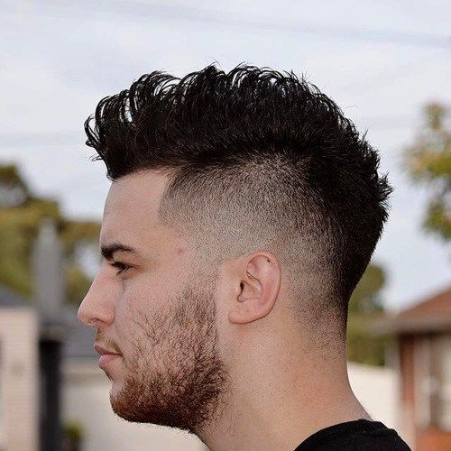
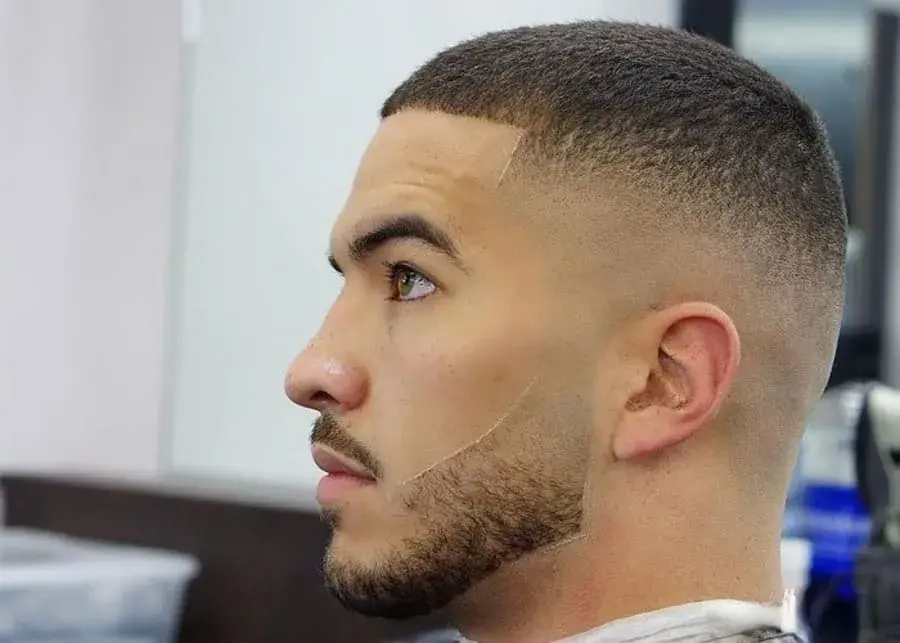
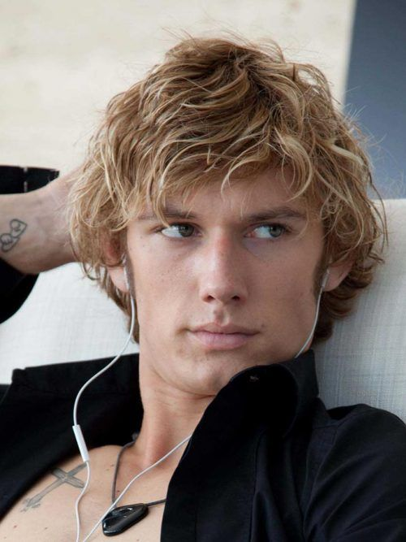
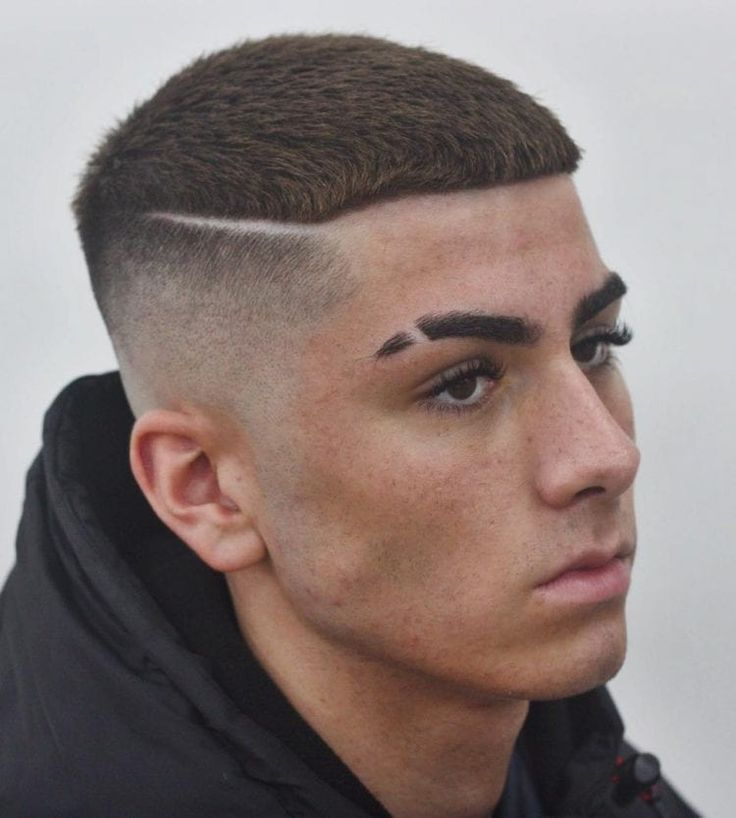

Corte de pelo degradado: Este estilo de corte implica cortar el cabello gradualmente más corto desde la parte superior de la cabeza hacia abajo. Es popular por su transición suave y limpia entre longitudes.
Corte de pelo a capas: Este estilo implica cortar el cabello en diferentes capas, lo que crea volumen y textura. Es ideal para cabellos largos y ayuda a dar movimiento al cabello.

Corte de pelo rapado a los lados con cresta: Es un estilo audaz donde los lados de la cabeza se afeitan o se cortan muy cortos, mientras que la parte superior se deja más larga y se peina hacia arriba para crear una cresta distintiva.

Corte de pelo estilo militar: Este corte implica recortar el cabello muy corto en los lados y la parte posterior, mientras que la parte superior puede ser corta o ligeramente más larga. Es un estilo limpio y de bajo mantenimiento.

Corte de pelo estilo surfista: Caracterizado por mechones largos y despeinados, este corte evoca una apariencia relajada y playera. Es ideal para cabellos ondulados o rizados.

Corte Buzz: Este corte implica cortar todo el cabello a una longitud uniforme muy corta con una máquina de cortar. Es un estilo muy bajo en mantenimiento y proporciona un aspecto limpio y fresco.